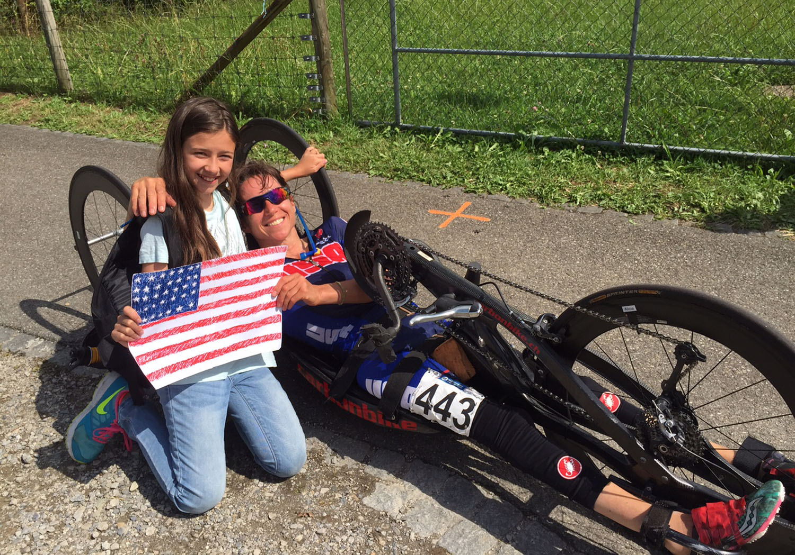

| Fort Wayne Paracycling Open | Fort Wayne, IN | April 17 & 18 |
|---|---|---|
| Redlands Bicycle Classic | Redlands, CA | April 23 |
| UCI Paracycling Road World Championships | Ostend, Belgium | June 4-7 |
| 2020 Paralympic Team Trials | Minneapolis, MN | June 27 |
Support - direct or indirect - is critical. My "Team" is not only the Team(s) I race with, but also my family and community.
Living in Vermont, the off-season for me begins in October and ends in April or so. Roughly six months of the year I don't train on the road. While this is an important "break", it can be a challenge to stay focused, motivated, and in shape... Read more